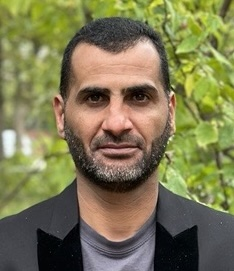

01
AI for Aging & AD/ADRD
Computational methods to investigate cognitive impairment, Alzheimer's disease, and aging-related health trajectories.
Assistant Research Professor
University of South Florida · Bellini College of AI, Cybersecurity & Computing · CITA
I develop AI and biomedical informatics methods for multimodal health data, real-world clinical data, aging, and Alzheimer's disease and related dementias. My work spans computational phenotyping, longitudinal EHR modeling, and machine learning for biomedical discovery.

Computational methods to investigate cognitive impairment, Alzheimer's disease, and aging-related health trajectories.
Integration of EHRs, imaging, biomarkers, genetics, and omics for biomedical research.
Clinical data harmonization, intrinsic capacity phenotyping, and longitudinal analysis of real-world data.
Transformers, graph neural networks, recurrent networks, and language-based methods for clinical data.
Developing clinically grounded computational measures of intrinsic capacity from real-world long-term care data.
Analyzing clinical, cognitive, biomarker, imaging, and molecular data across aging research cohorts.
Methods for extracting, standardizing, and analyzing longitudinal clinical data in older adult populations.
For a complete and updated publication list, visit Google Scholar ↗ .
For research collaborations and academic inquiries: